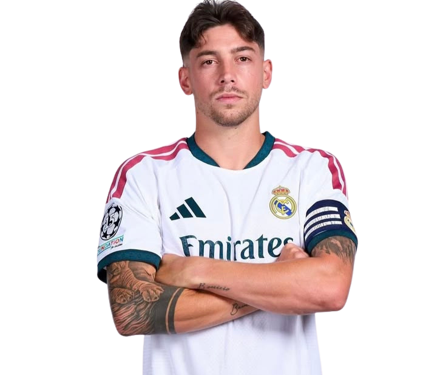

أهلاً بيك في موقعي الشخصي! أنا فيديريكو فالفيردي.. لاعب وسط ريال مدريد ومنتخب الأوروغواي. هنا هتشوف رحلتي من شوارع مونتيفيديو ولعب الجرينتا مع بنيارول، لحد ما حققت أحلامي بالقميص الأبيض ورفعت أغلى الكؤوس في أوروبا.
استكشف البطولات
كل بطولة وراها قتال، عرق، ولحظات ما تتنسيش.. رفع الكؤوس مع أفضل نادي في العالم مش مجرد حلم أتحقق، ده الدافع إني أقدم أكتر في كل مباراة.
صاحب التمريرة الحاسمة في نهائي باريس 2022 والقتال في ملحمة 2024.
الاستمرارية والسيطرة على خط الوسط طوال الموسم.
التألق والتسجيل والحصول على الكرة الفضية والذهبية للبطولة.
مباريات حاسمة وتضحية بدنية كاملة لحسم الألقاب المحليّة.
أرقام تعكس المجهود والركض المستمر على أرض الملعب مع النادي والمنتخب.
"سأركض حتى تتوقف رجلاي عن الحركة.. من أجل هذا الشعار ومن أجل إسعاد جماهيرنا."- فيديريكو فالفيردي
محطات رئيسية في مسيرة الصقر فالفيردي.
الظهور الأول مع نادي بنيارول (Peñarol) وتحقيق بطولة الدوري المحلي بعمر مبكر.
الانضمام إلى كاستيا (Real Madrid Castilla) لبداية الرحلة في القارة العجوز.
فترة إعارة ناجحة مع نادي ديبورتيفو لاكورونيا والتألق في الدوري الإسباني.
صعود للفريق الأول، الفوز بالكرة الذهبية لكأس العالم للأندية، ودوري الأبطال، وارتداء رقم الأساطير.
أبرز اللقطات المصورة واللحظات التاريخية في المسيرة.